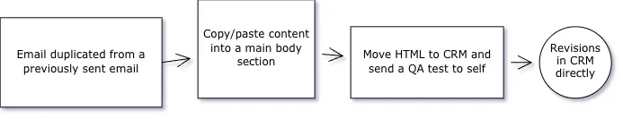
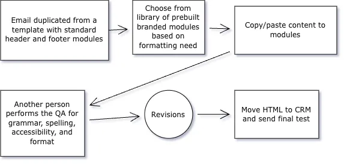

Email Design System
Building a modular email component library that gave non-technical marketing teams full campaign autonomy while improving quality, consistency, and performance.
The Problem
Non-technical marketing staff were fully dependent on developers to build every email campaign from scratch. Each request created bottlenecks, introduced inconsistencies in brand execution, and resulted in a high error rate across deployed emails. There was no shared system, no reusable components, and no way for marketing to move at the speed the business needed.

The Approach
I audited the existing email production process end-to-end, mapping every touchpoint where requests stalled, errors were introduced, or brand standards were compromised. From there I designed a modular component library built around reusable content blocks — headers, hero images, body text, CTAs, footers — each with built-in brand and accessibility standards baked in.
- Audited existing production workflow and identified key failure points
- Designed modular HTML email component library with accessibility built in
- Built reusable templates covering the most common campaign types
- Trained non-technical marketing staff on self-sufficient assembly
- Established quality standards and a lightweight review process

The Outcome
Marketing teams gained full campaign autonomy. Production time dropped by 60%, errors decreased by 30%, and email open rates reached 53.2% — a direct result of improved content quality and consistent design standards applied at scale across every campaign.